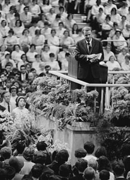

Photo credit: Erling Mandelmann / photo©ErlingMandelmann.ch / CC-BY-SA-3.0
Many people — including me — remember Billy Graham’s funeral on TV. My own memories placed Graham’s death close — within weeks, possible a month or two, at the very most — to the time when Ted Kennedy died. I remember that the weather was warm in New England.
At the time, I didn’t think Billy Graham’s funeral was especially odd. I didn’t watch much of the funeral and burial coverage, but I can remember flipping through TV channels, and seeing most networks carrying the event. I remember thinking, at Ted Kennedy’s funeral, “Wow. We just had lots of shows pre-empted by Billy Graham’s funeral. I guess that kind of coverage has become standard.”
I clearly remember the funeral, and related TV coverage for several days.
Apparently, this “memory” is prevalent… perhaps more prevalent than the Nelson Mandela ones. I’ve actually argued with a friend because she was 100% certain that Billy Graham had died. She, too, remembered the funeral on TV. It took Wikipedia to prove that we both had odd, completely identical memories… that never happened. Not in this timestream, anyway.
Many readers have their own memories of Billy Graham’s death, funeral, and burial. Mostly, they recall the TV coverage.
And — like me — most are entirely certain they aren’t mixing it up with Billy Graham’s wife’s funeral, which had some coverage on TV news shows. (Ruth Graham died in 2007. Ted Kennedy passed in 2009. That’s not close enough for me to connect in my memories.)
Tamara Thorne said:
I don’t have any recollections about Mandela, but do have pretty clear memories of Billy Graham’s death.
Marna Ehrich said:
wait, wait, wait… Billy Graham is alive??? since when? I remember his death, but not his coming back …
Margaret’s comments included:
… I also remember Nelson Mandela’s funeral and the deaths of Billy Graham, Dom Deluise, Ernest Borgnine and Mickey Rooney. It’s all very interesting.
Johnathan said:
Billy Graham for a surety. I test it on my mother and asked her, “You remember Billy Graham dying right ?” To which she replied “Yeah he died from Alzheimer’s.” When I informed her that he was still in fact alive she said, “Oh well then he was in hospital from it”.
Jeff said (in March 2012):
So Billy Graham didn’t die? I distinctly remember hearing about his death! I really can’t be sure about Mandella though I did think he was dead, I remember hearing about Ernest Borgnine dying, but he is still alive apparently!
[In a later comment] Thinking about it some more, I distinctly remember seeing Billy Graham’s funeral procession on TV!
Blob said:
Billy Graham is dead,yes? if not, please provide a link, i remember him passing about a year or two ago, as does my wife.
Teri said:
My mom and I both also “remember” Mandela dying in prison as well as Billy Graham dying soon after retiring.
c said:
i do believe i heard about billy graham’s death.
Kassia said:
Interesting on so many levels. I am in the same boat in regards to Mandela, Billy Graham, Australia!, 52 States (I am European),etc, etc.
Joe said:
I just last month had a discussion with a friend. I swore Billy Graham died and I watched his funeral on TV and so many people in tears and the sadness of such a great man being laid to rest and being honored by the Presidents and I even remember Bill Clinton speaking words in his honor…my friend said I was crazy. I asked my mother and she remembers us talking about his passing. I just don’t know what to think…
Elaine said:
I also thought Billy Graham was gone, for sure, seeming to recall something with his son speaking, etc.
Skye said:
Running across this string via FaceBook seems so odd to me, but here I am…
I remember Billy Graham dying & I was also jolted by the comment about Honduras. I have always thought it was an island also.
Kate’s comments included:
i also remember clearly the David Soule death—(i am shocked, up until I read this just now I still thought he was dead!) AND the Billy Graham death (Shocked)
Josh said:
Weird, I remember Billy Graham dying too….
L said:
When I first read this article, I thought you meant that some people remember Billy Graham as being still alive. After I understood, I was shocked and had to double and triple check before fully believing it. I can clearly remember the death of Billy Graham and watching an interview of his widow talking about events from his life, his evangelism, how the two met, ect, with my grandma and talking about what a shame it was that such a good man died. I asked her if she remembered any of it, and was shocked when she told me that the only thing she could remember was his wife dying a few years ago. I thought she must be mistaken until I googled it. In my timeline I can remember channel surfing and her being on television with her son no longer than a year ago. The only reason I remember is because the Grahams live close to where I was born/grew up and at the time I thought it was cool that a local family was on television.
Hoss’s comments included:
Some tv channel mistakenly reported that Billy Graham was dead:
http://www.mediabistro.com/tvspy/wbtv-mistakenly-reports-death-of-billy-graham_b31294
My reply:
That’s pretty wild about the TV station making a mistake like that. I mean, it’s not as if the staff would run with a major story without double-checking it, right…? And, they’re referencing CBS News, which is the central office all the CBS affiliates get their information from. So, that makes this doubly strange. It sounds like someone in the news chain had a Mandela moment, and maybe more of them did.
Kate said:
My friend, who I often talked about this kind of thing with years ago, pointed out to me tonight that Nelson Mandela and Billy Graham were born in the same year. Just some interesting serendipity. or is it? lol
Catherine said:
I remember a lot of these, Nelson Mandela and Billy Graham both dying in the 90′s.
My comment:
This means that there may be multiple timestreams represented here. My Billy Graham “memory” was definitely related to Ted Kennedy’s death in 2009, and others have referenced other years for Billy Graham’s death. So, if we’re “sliding” in and out of alternate timelines, we’re not all visiting the same one.
Interesting!
Chris provided some great details:
I am (or rather was until now!) certain that Billy Graham had died. I was only talking about him the other day in passing to my partner and we both agreed that he was a bit of a looney! I remember seeing parts of the funeral on TV and in the papers (UK Times if I remember rightly!!).
It was a big deal to the Evangelicals in the States and I definitely remember there were a lot of people mourning him – it felt more like the funeral of a monarch/state funeral.
There was a white sheet over his coffin with a gold eagle on it (or certainly some gold symbol) as it was carried by the bearers.
kat smith said:
Billy Grahams death puzzles me, I remember it occuring a few months before Ronald Reagans death.My mother and I sat at our little 13″ monitor in the kitchen….with flashes on the bottom screen about Billy Grahams death, in attendence was George senior to the left of Jr..Bill Clinton to the right in Blue covered chairs….the casket draped in a white cloth was paraded infront off the former presidents….as it was carried up the isle….I remember his son, widdow, and Bill Clinton speaking….it was held outdoors in NC……that day was very vivid, my mother remembers it as well..
Matt said:
This is a very intriguing topic. I’m among the people who don’t remember Mandela dying in prison, however I’ve encountered several people over the years who did remember his death and were just as surprised as you were. I do, however, remember the death and funeral of Billy Graham, not to mention countless other celebrities who turned out later to be very much alive. Those other celebrities could very well have been misreported deaths, as sometimes happens, but the thing with Graham is, like others commenting, I remember the funeral on TV. Maybe it was a funeral for someone else that I’m remembering, but I was just as shocked as anyone to learn he was still alive.
Those are the Billy Graham comments at this website, so far. If you have memories about Billy Graham dying prior to 2013, I hope you’ll share your comments, below.
Indeed, I’ve heard people claim that both the Priest guy, and the Wrestler were dead, when neither were.
I remember The funeral, and I remembered my mom and my Aunt making fun of Tammy Faye Bakkers makeup. I remeber the blue background etc.
I also remember very clearly when Billy Graham died, in fact I remember reading all the news articles on CNN and MSNBC about his death while I was at work. I also remember after work, seeing CBS News running stories about his death.
I only learned recently on a thread on GLP that Billy Graham is alive, at first I say no way in heck is that possible because I saw the news, both in print and on TV. I looked it up Wikipedia and sure enough, he’s still alive.
I don’t get how that even happens? Makes no sense.
I wonder if this particular “phenomenon” can be attributed to some type of mass premonition? When indeed the inevitable does occur for Billy Graham, I for one, will be keeping a keen eye on the funeral proceedings (i.e. keeping a watchful eye on coffin and any drapings over it etc).
These memories are very clear to me–it would be a completely different story if the characters were all different for us—but they are the same re-occurring people—which says to me that they are significant milestones in many time lines—I was told in my high school social studies class that Nelson Mandela had died—in prison—I remember seeing Billy Grahams funeral on TV—New Zealand was north of Australia—I was pretty dam sure of that my whole life until I read these threads…so interesting all of this.
Just googled Billy Grahams death unsure if he was alive or not. I though he was! I knew his wife passed away yet was unsure about Billy because there is so much ‘mass promotion’. ‘Nearing Home’ and other resources prematurely reflect on ‘a great man who once lived’ as opposed to ‘a great man who lives’.
Perhaps Men in Black have clicked their bright memory loss light. haha
Interesting you should say that. Experiences with the men in black do involve things like memory loss and missing time. Maybe their job is to fix the timelines when they get messed up due to dimensional bleed-overs.
I remember seeing a brief image of Billy Graham’s funeral on TV. The coffin was covered in white and there was powdery blue and darker blue in the background. Billy Graham means little to me, this collection of shared memories seems so random. I feel like even when I caught a glimpse of the funeral on TV, I was surprised then that he had just died, and thought that he had already passed away.
I was working at the Grove Park Inn in 2013 for his birthday celebration. I was very confused because I remember very disticntly that he died in the early ’90s when I was a child. The only reason I recall this is because I share the same birthday he does, and kid-me was very sad that such a powerful man I was barely associated with had passed on.
Here is a twist, and I don’t know how this is possible — but I remember at least two rounds of national publicity, reporting, and the funeral of Billy Graham. The reason I say at least two rounds is because, really, there was at least one more round prior to those two times I remember distinctly; it was that vague “first” time when by the second time you go through it you are seriously confused because you’re having those first thoughts of didn’t we already go through this?
It drove me nuts; if I commented online, people would say I’m confusing him for another religious leader. No, it’s always definitely been him, the spiritual adviser to so many presidents. There definitely was all kinds of news coverage of his death during the presidency of George W. Bush, which is when I was uneasy because I already had vivid memories of him dying during the Clinton presidency. The third time has been during the Obama administration. I always have to check now — he’s listed even now as alive (though in Wikipedia much of the references to him are in the past tense, that he was the pastor to the presidents, etc.).
I remember Billy Graham dying a couple times as well. My dad was always a fan of his and I got confused whenever he would mention him being alive because I swear I remember watching news coverage of his funeral only a couple years ago. We even talked about it at one of the youth group meetings I attended. My dad kept saying I was confusing him with Jerry Falwell but that’s kind of impossible because I don’t remember too many people mourning him.
I firmly remember the death of Billy Graham in early to mid (May, I think) 2000. Bill Clinton was still president and Al Gore was running in the primaries. Bill Clinton gave a long eulogy, and it very much was like a state funeral, much like others have described above. I had a roommate at the time who was an atheist and said that he thought Graham was “an a**hole” while my position was that he was a good man who did a lot of good things and that dissolved into an argument about speaking ill of the dead. It was kind of a heated argument (not too heated, we debated religion a lot back then), all the while CNN was playing in the background (and it was on the other channels too). It was a very hot year, and a very hot day when it happened. I think like a month later, the rolling blackouts began.
These are very specific, very detailed memories, as clear to me as if they happened just last week.
I also do recall then President Clinton speaking at length about the death of Billy Graham. I also recall him speaking later time about the death of of longtime Washington Correspondent Helen Thomas who is now evidently…. still alive. I clearly remember Clinton speaking on the podium on national TV about the death of Billy Graham and how he had been a spiritual advisor to so many prior American Presidents and that he was a national treasure. Evidently Graham has died and resurfaced again and Helen Thomas is alive even today. How can so many people have such a different but yet parallel memory of multiple historical events? This is not regulated to memories based on just TV news but also both in print and even in memories of conversations about the current events of the time?
Good questions with no answers… yet.
Clinton’s sincere and very moving tribute to Billy Graham is still among my memories, as Clinton seemed to drop his guard more than usual. Nevertheless, Billy Graham is still with us. Very odd.
However, Helen Thomas is gone now, at least in this timeline. She passed away 20 Jul 2013. (Ref. https://en.wikipedia.org/wiki/Helen_Thomas )
That’s the part that really stands out to me. And the eulogy was live on every major network and news channel. I remember it being the later part of May of 2000, specifically (I think I remember saying that in a previous thread).
Now I’m REALLY confused. Are you foks saying Billy Graham is still alive in 2014?
If so, then I remember him dying twice. The first time was perhaps early 2000’s when he succumbed to his terminal cancer. I don’t remember his funeral, but I remember his family spokespersons saying he had days/weeks to live with no hope of recovery. I passed the sad news to my husband. We are/were both Evangelical Christians and former Presbyterians, so this was news that definitely caught my attention. Then I became involved with personal crisies, so I didn’t hear followup news, but I had no reason to be lieve he was still alive, -until to my shock some years in the later 2000’s, I heard Billy had died ‘again’, but this time from Alzheimer’s (after a long lingering decline). First he died from terminal late stage cancer. Then he died again from Alzheimer’s. Is he dead or alive now? This reminds me of the 1960’s Whose Afraid of Virginia Wolfe, when the couple lived with an immaginary son – they were childless. They made up stories about ‘him’ as he grew and matured in life. One day during a fierce quarrel, the wife dealt the ultimate blow to her husband by telling him how their son had just been “killed”.
I’m not convinced of alternate realities. I suspect quarreling groups of Powers That Be, who keep resurecting and killing off famous personalities to suit their own agenda. The other factions can’t reveal the death hoaxes because by doing so, they would be revealing their own lies.
Oh I forgot to mention that NONE of these famous personalities actually exist – which is critical.
I’m not sure if any of the famous persons we see on our TV and magazine covers actually exist or if they are merely photoshopped/cropped images/pixils on a screen.
Christine, those are some good observations and speculation. Thanks! And yes, check Wikipedia: As I’m writing this, Billy Graham is still alive.
In real life, I’ve had more arguments with people over this one than any other point at this website. Most people seem to recall Billy Graham’s death. (Second place, at the moment: Berenstein v. Berenstain Bears.)
Cheerfully, Fiona
As clearly as my memory’s of Billy Graham’s death are, I still remember them as the BerenSTAIN Bears.
I’ve seen multiple celebrities in person. It’s preposterous to think that they might be computer generated when we only developed the technology to recreate with lifelike accuracy within the last decade. Although they could possibly be severely brainwashed to serve as propaganda puppets.
Wade,
You make some fair points.
However, a couple of decades ago, I worked in an MIT office where we had access to considerable confidential lab and field testing results. Back then, a southern California firm had successfully teleported small objects about six (maybe 10) feet, in the lab. They’d done it consistently. So, the general public may not realize teleportation is viable (and has been, for some time) — and possibly very advanced since I read related reports.
Likewise, avatars might be far more realistic than existing games lead us to believe. If so, hiring people to play those roles in real life, to interact with the public…? Piece of cake. Of course, I’m pretty sure it’s cheaper to hire actors than build avatars (convincing ones) for movies. Nevertheless, this is a normal adjunct to Whole Brain Emulation (WBE), on track to be viable by 2045 or sooner.
(Image courtesy of Wikimedia and Tga.D. CC-SA)
I’m not saying Christine’s theory is likely or wholly plausible at this time. Nevertheless, I think it’s a viable possibility in the future, and — at the present time — I think media manipulation is rampant enough that some of what we think we see… it never happened. Not as presented, anyway. (That’s not news. Clever editing of words & images has been part of news reporting since forever.)
The brainwashing possibility you raised…? Very likely. Many celebrities may be very strong in talent (or not) but weak in personal boundaries. That makes them easier to direct, on stage or in films. (Some say that’s narcissism, and — in some cases — that may be true. Note: Narcissism isn’t about vanity as much as internalizing external cues.)
Fascinating possibilities!
Cheerfully,
Fiona
It would be an interesting exercise to try to isolate different timelines. Are people who remember BerenSTAIN Bears more likely to also remember Billy Graham’ s televised funeral? I for one have no recollection of Graham’ s death, but then again, I clearly remember BerenSTEIN bears. Can someone create a poll on survey monkey that will enable us to identify two or three different time streams?
I don’t remember watching Billy Graham’s funeral on television, but I do remember riding in the car with my dad and hearing that he had passed away due to health complications in his sleep on the radio. The radio station was a Christian station, so they were asking for people to pray for his soul and for the comfort of his widow and children. I so distinctly remember that that I can place what I was wearing and where we were driving to/where we were on the road. This would have been fairly recent, 2012-2013? We both said how sad it was that he died although we don’t belong to his faith, which I thought was weird, because my dad doesn’t usually say that he’s sad that someone he doesn’t know personally has passed away. (Not to say that he doesn’t get sad over other people’s deaths, he just doesn’t usually express his feelings about people passing away unless he has a personal relationship with them.)
I know my memory doesn’t match yours of it being 2009, but I know for sure that my memory is of his death being in the last two/three years because of the clothing I was wearing (uniform from work, late night after my dad picked me up). It blows my mind that he’s not dead, I so clearly remember it!
I actually just looked Billy Graham up, and apparently his wife passed away in 2007? Why do I remember the radio host to ask for us to pray for his widow then??
My mind is so blown right now. There is no way Billy Graham is still alive! I was 100% sure he had died a few years ago; I remember hearing about it at church and seeing it in the news.
And it was totally BerenSTEIN Bears. This is real. Whoa.
Oddly enough, well-known televangelist Oral Roberts died in 2009, which is when people remember Billy Graham dying. Though I can’t imagine all the presidents and fanfare that people have in their memories of a Billy Graham funeral happening for Oral Roberts. Graham was a spiritual adviser to several U.S. presidents while Oral Roberts was [controversial]. The odd thing is that Oral Roberts, Billy Graham, and Nelson Mandela were all born in 1918.
Jay, thanks for those notes. That’s an angle I hadn’t considered: If there are patterns to the birth dates of the people involved in some of these alternate memories. Also, while I understand your vehemence about Oral Roberts, I edited the comment to keep this discussion on track.
For the record, I don’t remember Billy Graham dying, or Nelson Mandela dying prior to last year, but I do remember the BerenstEin Bears, and a man getting ran over by a tank in Tiananmen square. I tried to complete the poll about 5 times, but every time it wouldn’t let me, even though I know I entered the captcha correctly. I finally gave up. Personally I think it should be called the BerenstEin Bear effect, as it seems that is the one most people remember.
Jay, I’m sorry to hear that the poll is being difficult. I had mixed feelings about the captcha, but didn’t feel comfortable leaving it off.
I’d have called it something other than Mandela Effect if I’d had any clue people would report so many other “alternate memories.” At the time, I thought Nelson Mandela’s death was a one-off anomaly, and I’d collect info and write a book about it.
Years later, reality (or perhaps alternate reality) has been a little different.
Cheerfully,
Fiona
Do you still plan to write that book?
OK, so I was in simple.wikipedia.org when I tried to find the wikipedia page for Oral Roberts, and it was not there, but in the main website there is one for him. Regardless, Roberts was a faith healer and not taken nearly as seriously or loved by as man people as Graham, he was not an adviser to presidents, his death would not hold up the media for days, as I’m sure it didn’t. No one would confuse those two men.
Pat Robertson is still alive, and Jerry Falwell died in 2007. There were four televangelists (from wikipedia’s list of famous televangelists) who died in 2009 – of which the most notable (arguably) was Oral Roberts. Certainly none of those that died in 2009 would have had much in the way of televised services or former presidents in attendance.
Oral Roberts has an entire university named after him, a rather large one, in Oklahoma. Plus, he was very outspoken and said lots of controversial things (which the media loves). It’s not hard to believe he’d have had a pretty decent media coverage during his funeral, which he did. People confused Oral Roberts and Billy Graham quite a lot once upon a time, so this doesn’t seem to outlandish to me. That’s just a theory..
Anon, thanks for the suggestion. Personally, I’d never mix up Oral Roberts and Billy Graham, but I suppose someone else might. Roberts was outspoken and rather extreme at times. While some might think of Graham’s rhetoric as extreme, in my memory he has always been pretty inclusive and low-key, contrasted with Roberts. But, that’s a very personal viewpoint. Others might indeed lump both men into the same general category.
I’m with Fiona on this. I would absolutely not confuse Billy Graham and Oral Roberts. Billy Graham’s funeral is one of my strongest alternate memories. If hooked up to a polygraph and asked if I had a definite memory of his funeral, I would pass. I was, as the British say, “gobsmacked” awhile back when I heard him being talked about in the present tense on the radio. I was raised a Protestant Christian (Lutheran) and still attend church. My grandmother, Baptist until she became Lutheran, really liked Billy Graham and had some of his books. I have an overall positive view of B.G. while a slightly negative one of Oral Roberts. (Don’t know much about O.G. really) Also, Billy Graham has personally met and advised several U.S. presidents which explains why there were living presidents at his televised funeral. Of course I can’t explain how this happened, but I know what I experienced without a doubt.
Thanks, Julia! Very well said, and I’m nodding in agreement.
I am with people who remember Bill Graham passing from cancer either 90’s or early 2000’s. At the time, I was a big Clinton fan and followed everything he did very closely. I had read his close relationship with Billy Graham and I liked him. I am positive he died; there was a big TV funeral; and Bill Clinton spoke in his funeral. I was out of the country for few years and recently came back. Recently, when I heard Billy Graham was still alive, I almost fell out of my chair. I just can’t reconcile my memory of his funeral with the reality that he is still alive. On top, how is it that so many people remember him dying in 90s? and funeral on TV? This really is very freaky.
On the other hand, I clearly remember Nelson Mandela leaving prison after years of imprisonment.
I thought I remembered Billy Graham’s state funeral, but now I’m not so sure. I think I’m confusing it with his televised 50th anniversary crusade. I thought he was dead though. It’s BerenstEin bears because I remember learning the word as a kid, because it was a long word, and that’s what I liked to do, I also remember a wtf moment watching PBS and they were seemingly obtusely pronouncing it STAIN. Mickey Rooney appears to have died twice. I don’t remember when Mandela died, but he was in his early 70s. Sri Lanka and New Zealand has moved, and I remember when I noticed, I was playing an old super nintendo game called Uncharted Waters New Horizons which focuses on exploring a real map of the world and trading. I must have beat that game about 20 ties and put countless hours into it. I remember looking for Sri Lanka and was weirded out that it moved. Same with NZ. I also remember 50, then 52, then 50 states. Maybe they were counting Puerto Rico and Guam?
Maybe this is an entirely natural process going on, or maybe it’s some bizarre theological apocalyptic scenario,or maybe it’s a result of CERN or repeated Nuclear Weapons testing and detonations in the Pacific or something else entirely.
If this is true, that our collective or individual consciousness, or even will is at the whim of some great and unpredictable external force, the philosophical question then becomes, do our lives mean any more than we make them out to be? One has to wonder as well, if this thing could be progressively getting worse and more rapid and if scores of people are in mental institutions because their memories do not line up with what we believe to be the current time at all.
I remember Mickey Rooney dying in 2000! Why? My grandmother DANCED in a film with him when she was 15 years old!! They were young then. Mickey died in 2000! My grandmother cried the day it happened, and called to tell me. My family keeps a photo of her and Mickey when they were young. They were friends for a little while.
Hey, those who remember Billy Graham’s funeral on TV.
Do you remember the broadcast having a BLUE TONE to it?
A Blue HUE mixed with some Black & White footage?
I do, and someone else on here remembered that too.
JM,
I recall some (not all) of the funeral coverage (over a series of days) having video difficulties. I blamed the odd color on the light and environment.
What I recall are the greens (grass, shrubs, greenery with the funeral wreaths, etc.) and sometimes they seemed too blue. (The greens should have been more yellow.) In fact, the color oddities were why I watched as much of the coverage as I did. The greens were rather fascinating. The richness of the colors reminded me of old TV news coverage from the early 1960s, when color TV was relatively new.
Generally, I don’t watch funerals on TV. I think the tributes are rather lovely, but I’m usually bored during coverage of the long, slow processions (of the hearse, etc.) through the streets. Oh, it’s wonderful to see so many people lining the streets, to give a final “good-bye” to someone they admired, but I have a limited attention span.
I’m not sure if that’s the kind of color you recall, but until you phrased your question as you did, I’d pretty much forgotten the colors. I saw some similar effects when I (very briefly) watched Teddy Kennedy’s funeral coverage on TV. Since the two events were around the same time, I’d figured the skewed colors were the result of new video equipment that was still being tweaked for color accuracy.
Cheerfully,
Fiona
Fiona, I have been waiting and watching to see if anyone would post what I remember about the funeral. Blue ,was a big theme. And when you said 1960’s color TV , I knew it wasn’t me. That’s exactly how I would describe what I remember. I thought it always reminded me of the old home movie type film colors. Your description matches what I know I saw. Mike
Mike, thanks for the reply. This is exactly what I look for in comments, too: When people say things very differently, but — having the clear, alternate memory, myself — I recognize it as how someone else might describe it. Different words, a slightly different viewpoint or focus, and sometimes framed in a different way, but they’re describing the same thing. It’s kind of a “you had to be there” recognition, but — to those who really have that memory — it makes perfect sense.
Cheerfully, Fiona
After reading some of the comments on here, two in particular really resonated with me. I specifically remember Billy Graham’s funeral being televised in the spring of 2009 on CNN. What really creeps me out is hearing others commenting on the heavy presence of the color blue throughout the services. I had never heard anyone mention this before and the fact that others noticed this gives me chills. Secondly the bearenstEin bears, I remember being a young child and I couldn’t figure whether it was pronounced steen or stein, not stain whatsoever. Who knows what other “changes” have gone undetected?
I found this site through a winding path of subreddits, and was quite frankly shocked by what I read. Billy Graham isn’t dead!? I had to google it to make sure, and I guess it’s true. But here’s the thing: I distinctly remember him dying like, 2-3 years ago! Not in 2009, that seems a little far back for me, but I don’t have an exact date. I remember, not the tv footage, but a magazine cover, with a picture of Graham and some sort of in memoriam phrasing on it. My grandparents, who I live with, and who followed Graham’s ministry, were somewhat torn up about it. I recall them attending a Christian conference not long after, and reporting back to me when they returned that someone had spoken some very nice words about Graham’s memory. They continued to talk about his death for some time afterward. So… maybe you can see why I’m so confused. I don’t think a simple erroneous news report on television could do this. I have yet to confer with my grandparents (they’re asleep at the moment), but I plan to when they wake up. I also want to see if I can find the magazine (though I doubt it; we recycle and it’s been years). Thanks for making this site, I guess. I never would have known, otherwise. How freaky!
I apparently am on the same timeline as you Black Sheep. I cannot believe I just googled Billy Graham and he is STILL ALIVE. I KNOW he died just a couple years ago. I would have passed a polygraph on it! I do not remember him dying before this like some others, but am convinced he died recently. I live in North Carolina, and of course, it was big news here. My mind is completely unhinged right now. Also, I caught on a thread above that Ted Kennedy died. Looked it up, and sure enough it says 2009. I have no memory of Ted Kennedy being dead and am in complete shock over that. My rabbit hole is getting deeper by the day…
Wondering if this wasn’t Billy Joe Daugherty you are remembering? He died shortly after Ted Kennedy.
B, this was such a quirky comment, I had to approve it. I had no idea who Billy Joe Daughterty was. Even after looking him up, I’m not sure if yours was a prank post or if the man was important enough to warrant a three-day televised funeral… somewhere. I’m 100% certain his funeral didn’t block national network programming for at least three days.
Fiona, Of course,the collaterals are the clinching points for any of ME memory,3 day period is an essential evidence.Likewise i have a similar collateral for SL memory and some day i may post it.
On Billy Graham, the famous guy who was in with the Grateful Dead, he owned Winterland and other venues, died in 92(?), in a helicopter crash into powerlines (California?). While this didn’t explain people seeing the other Billy Graham’s funeral on tv, i have met a few folk who confused the two since they had the same name.
Lourdes, Bill Graham was the music promoter and owner of Winterland and Fillmore. (ref: https://en.wikipedia.org/wiki/Bill_Graham_%28promoter%29 ) He was never called “Billy” in the media, and — frankly — many ME readers weren’t alive during Bill Graham’s peak popularity. At best, he might be “that Fillmore guy.”
In 1991, Bill Graham (not Billy Graham) died at age 60 when a helicopter he was in hit a high voltage tower. The “Love, Laughter, and Music” concert celebrated his life. If his funeral was televised, I didn’t hear about it.
Frankly, I’m not sure how anyone could confuse someone from that music scene with a famous minister who advised several American presidents. We must travel in very different circles.
Nevertheless, on the off chance that someone is mixing up the two men, I’m approving this comment. (Please see Terms: Comments before adding more comments like this.)
When I read this page title, I thought “Yes, I remember hearing about that.”
I recall his passing as much later than 2009 though, because my aunt watched Billy Graham on a regular basis up until she died in March 2012.
After Graham died, I remember thinking that now finally my aunt might be able to meet him in heaven.
Strange.
That’s a lovely thought, Jason. I’m sure she will meet him… just not yet.
Bob Jones dies in 1968…maybe your memories are conflated with this event? That, or an alternate time stream.
Sean, I’m approving this because I suppose someone might have conflated them. However, there’s no way Bob Jones’ funeral was that large, attended by that many dignitaries, or had such extensive TV coverage across all three major networks at the time. So, I don’t think it’s a likely match for most related memories.
While I do not remember the funeral in any detail, I do recall hearing that Billy Graham had died numerous times. Each time I heard that he died, I would say, “Oh I thought was already dead.”
Early 2000s would be around the first time I remember hearing that he died, but thinking he was already dead. So The first death I remember would have been in the mid to late 90s. The second time was in 2009, and the third time that I remember was 2012.
Before I saw anything about the Mandela Effect I always just figured I had mixed up the death another famous religious person. But the last two times I was almost positive that it was Billy Graham.
I asked my husband about Billy Graham the other day. He clearly remembers his death too and was absolutely shocked that he’s still alive. He remembers watching news coverage of the funeral and specifically mentioned the color blue and that it reminded him of the nature of green screen, only in bits of blue here and there, especially something about the background of the funeral altar. We don’t watch TV at all so we read news online or in the paper but when my husband visits his parents at their home the TV is always on one certain cable news channel and he’s pretty sure this is where he saw the coverage. I also remember Billy Graham dying and having a discussion with my father about his life and death. My father was a Southern Baptist who liked him quite a bit and I found him to be the least offensive of the televangelists so I really took note of his death (I hope I didn’t offend anyone with that, it’s just my personal opinion).
Someone also mentioned Bob Jones’ death as a possible explanation. I honestly don’t believe that it’s possible that we confused the two. I know of Bob Jones, his history and his university and he died nearly 15 years before I was even born.
I too, remember Billy Graham dying in 2010. I talked about it with my grandmother who said that she thinks Franklin Graham will keep his legacy alive. I remember being happy that I had been able to see him and I remember her saying I was the only person in our family who got to see him which made me a little sad. I even bought her one of his books for the following Christmas. I also remember a televised memorial service with speakers held in an arena somewhere.
I remember hearing that Billy Graham died. And It was significant to me because I saw him on October 11, 2001 in Fresno, CA. I remember that day distinctly because I was afraid of the one month-versary after 9/11. And it was a religious event in an open stadium. So, if he supposedly died in the 90s, why do I remember him dying much later, after 2001?
No idea when it happened, and I didn’t see the funeral on television — but I have a distinct memory of watching a major network nightly news program (ABC or CBS) showing the standard graphic — a picture of Graham with his birth and death years — and remember thinking he had been diagnosed with Alzheimer’s and that his death wasn’t much of a surprise; I just don’t remember the year. That he’s still alive *is* a surprise.
I too remember Billy Graham dying – but only within the last couple of years 2012/13 maybe? I remember news clips on TV showing a very grand, state like funeral, and clips of his son (or may grandson?) giving an eulogy. I can’t say I remember any specifics like Bill Clinton being there or the colours of cloths on the coffin, because I really wasn’t all that interested. More of an “oh, Billy Graham died, very sad” and then move on with my life. But I am absolutely positive I remember the son (or grandson) talking about continuing on with Billy Graham’s life work, continuing the ministry, what a great man/father Billy was, etc etc.
I have very specific memories of quite a few of the others too:
In my memory it was “mirror, mirror”, Berenstein Bears, and Radar most definitely dying on M*A*S*H. I just last week caught a rerun of MASH that showed him back at home on the farm while the rest of the gang was still in Korea, and I remember thinking – wait – how did Radar get sent back to Korea, cause I KNOW he dies in a future episode!? I was confused, but just figured it was some minor story line I never saw the first time around… I just this moment googled it and yep, you guys are right – they claim his character was never killed off. WTH??? I’m getting a little freaked out… lol….
Yes I have a solid memory of Billy Graham’s funeral, the multiple, still alive Presidents all gathering for the funeral which seemed to be outdoors, lots of greenery, park like setting, and a vague memory of video glitches, maybe freeze ups with usual “color bars” test pattern type things. I think I was surprised and irritated that problems like that would happen during such an important national moment. I don’t recall the year, 2009 or 2010 feel about right because I was watching it during daytime television at a clients house ( I’m an RN). I most often just shake my head and laugh at how these Timeline type slips are happening for so many. I now have a more relaxed view about these things, knowing I am in good company! Many other odd experiences through my life as well, including hundreds of what I call “out of body experiences” mostly under age 10, multiple UFO sightings and related “high strangeness”.
So this isn’t on topic, but the Billy Graham post is closed. Personally, I don’t think I’ve heard of Billy graham outside of ME discussions… However, this was posted on reddit earlier today, a description of a video along with a link to it, of the opening of a library in his honor, and just, very strange. Past tense used when talking about him, as if he had passed… Oh, and this has many prominent political figures in it. I wonder if this is somehow this realities version of the funeral? Idk. Worth checking into though I thought. Happy Easter!
Woops forgot the link lol sorry.
https://m.reddit.com/r/MandelaEffect/comments/4a4a9a/could_this_have_been_once_a_memorial_service_for/